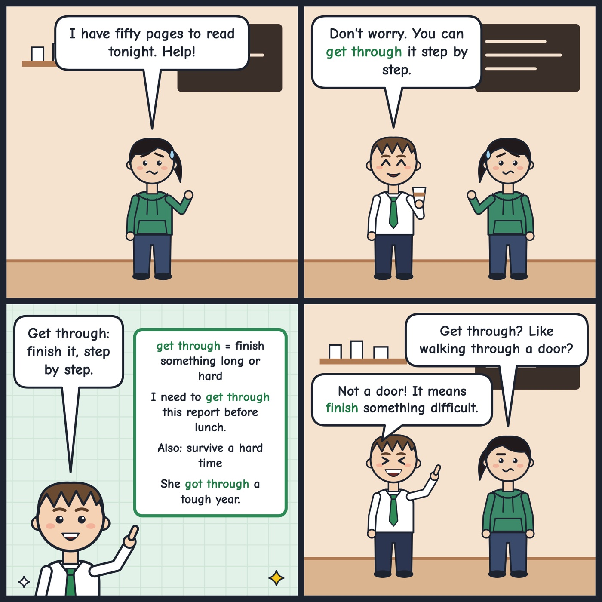

get through
To finish something long or difficult.
I need to get through this long report before lunch.
Tip: Use 'get through' + a noun for a big task (get through the pile, the book, the week); it often suggests effort, so don't use it for something quick or easy.
Hear it in conversation
Workbook
1. What does it mean?
In this conversation, what does "get through" mean?
2. Fill the gap
If we split the boxes between us, we should them all before the movers arrive.
3. Choose the best reply
Amira: You look exhausted. How was your first week at the new job?
4. Your turn: speak
Tell me about a time when you had a lot to do and not much time. How did you manage?
Show an example answer
Last month I had three assignments due in the same week. I made a list and worked on one thing at a time, and I stopped checking my phone. In the end I got through everything, although I was very tired by Friday.
Answer key: get through
- 1. C. To finish a large amount of work, even though it takes effort
- 2. get through
- 3. A. Honestly, there was so much training that I could barely get through it.
- 4. Example: Last month I had three assignments due in the same week. I made a list and worked on one thing at a time, and I stopped checking my phone. In the end I got through everything, although I was very tired by Friday.
See it in a comic
